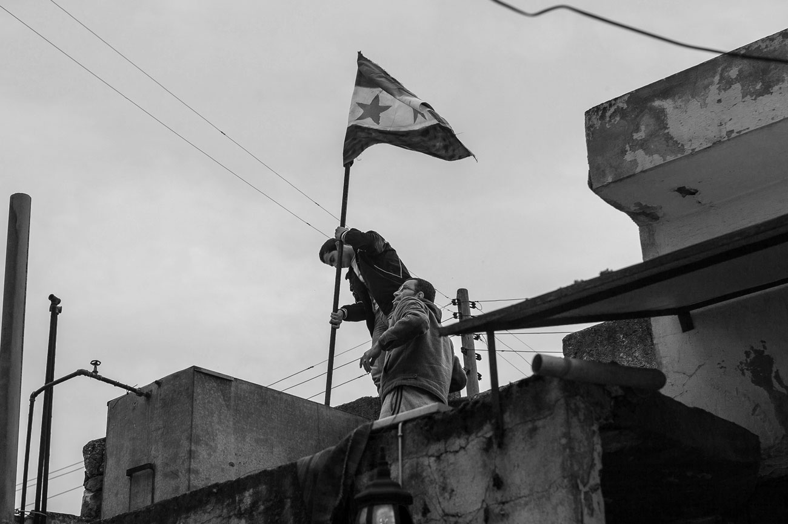
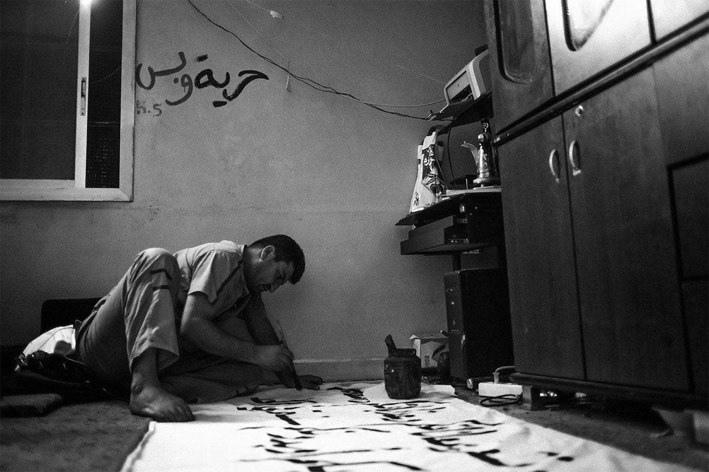
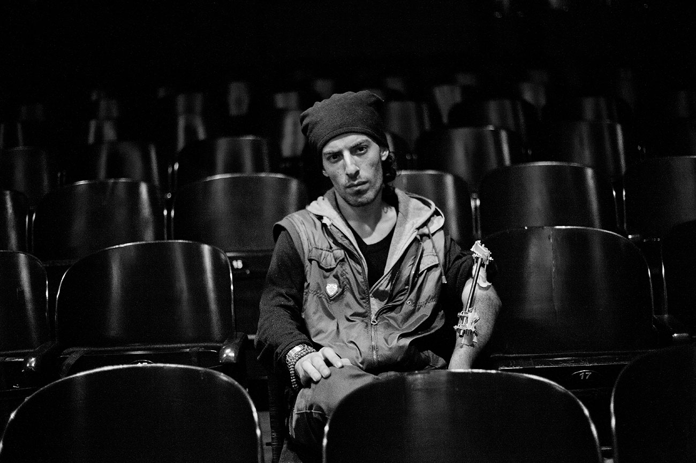

Fotografie i miniatury reportażowe z rewolucji i wojny w Syrii
Na Al-Dżazirze cały Kafranbel oglądał wtedy manifestacje w Tunezji i Egipcie. Jak do tej pory wieczorami ludzie spotykali się i tylko grali w karty, tak teraz zaczęli gadać, dyskutować o sytuacji w kraju, marzyć o zmianach. Pewnego dnia moja matka odwróciła się od telewizora i powiedziała: »Weź się w garść, Chalid! Tam młodzi w twoim wieku demonstrują, a ty tylko siedzisz w domu!«. Więc 24 marca 2011, tydzień po Darze, poszedłem na piątkową modlitwę. A na niej ludzie zaczęli szeptać, że nadszedł czas. Potem stali przed meczetem przez pół godziny, patrzyli po sobie, nikt nic głośno nie mówił, bo tajniacy obserwowali wszystkich. Ale wybuch wisiał w powietrzu.
Sarakib, marzec 2013.
Siedziba rewolucyjnego komitetu koordynującego
Siedziba rewolucyjnego komitetu koordynującego

Falafel już suchy, olej przepalony. Nigdzie nie można kupić nawet papierosów, odludzie. Pozostaje już tylko usiąść na plastikowym krześle bez nogi i patrzeć w rozgwieżdżone niebo, i słuchać, jak z minaretu głównego meczetu trzaskający głośnik nadaje w kółko to samo. Lekarze i pielęgniarki mają się natychmiast zgłosić do szpitala. Pilnie potrzebna krew grupy zero Rh plus, pilnie potrzebna krew… Ciągle płyny, takie czy inne. Jutro demonstracja i dwieście metrów stąd nasi przyjaciele na kolanach malują gęstą farbą gwiazdy na nowym sztandarze.
Kafranbel, luty 2013.
Rewolucyjne biuro prasowe, przygotowania do demonstracji
Rewolucyjne biuro prasowe, przygotowania do demonstracji

Mieliście skoczyć wielkim susem przez kilka dziesięcioleci, miękko osiadając w demokracji, indywidualizmie i zamożności. Wasze drżące charaktery wibrowały na europejskich częstotliwościach. W kwadrans uczyliście się angielskiego, pławiliście do woli w sieci. Nocami ze zniczy układaliście slogany, które miały być widoczne z kosmosu. Lampy ksero rozgrzewaliście do czerwoności od publikacji gazet, które błądziły pod strzechy. Grafficiarze kryli wężami napisów mury, dokumentaliści kręcili symboliczne filmy, malarze zaklejali metalowe rolety płachtami sztywnego papieru. Układało się pieśni, śpiewało wiersze, tańczyło i pijało wino. Chłopcy odkręcali tablice z nazwami ulic i skuwali uszy posągom, dziewczyny ostentacyjnie zdejmowały hidżaby.
Turcja, Antakya, luty 2013.
Muhammad, filmowiec i fotograf ranny podczas
protestów w Aleppo
Muhammad, filmowiec i fotograf ranny podczas
protestów w Aleppo

{kind=link}
{kind=link}
{kind=link}
{kind=link}
- Rafał Grzenia
- Maciej Moskwa
- SURA
- Rok wydania: 2016
- Rodzaj okładki: otabind ze skrzydełkami
- Format: 160 x 220 mm
- Liczba stron: 208
- ISBN: 978-83-941985-0-3
- Cena okładkowa: 46 zł